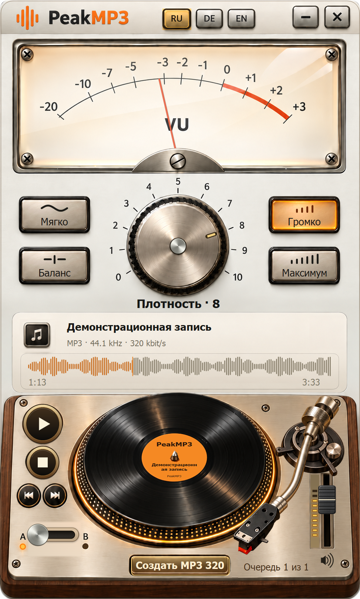

Работай с исходником
Загружай AAC, MP3, WAV или FLAC. При передаче с YouTube программа получает исходный AAC.
PeakMP3 · 0.16.0 Preview
Знакомый аналоговый характер. Сравни с оригиналом и сохрани свой MP3.
Общий установщик с YouTube Downloader

Загружай AAC, MP3, WAV или FLAC. При передаче с YouTube программа получает исходный AAC.
Регулятор плотности и переключатель A/B помогают выбрать подходящий вариант.
Папка по умолчанию — рабочий стол. При сохранении можно выбрать другую.
Три музыкальных фрагмента. Выбери трек, нажми Play на проигрывателе и поверни ручку PeakMP3.
Крути ручку, нажимай пресеты, A/B и кнопки проигрывателя. Перемотка — по звуковой волне, громкость — фейдером справа.
Плотности 0–10 заранее обработаны движком PeakMP3 0.16.0. A — исходный фрагмент, B — выбранная обработка. Демо не обрабатывает твои файлы в браузере.
Фрагменты по 24 секунды: обрезка, обработка PeakMP3 и кодирование MP3. Лицензия музыки действует отдельно от условий программы.
Крути ручку, нажимай пресеты, A/B и кнопки проигрывателя. Перемотка — по звуковой волне, громкость — фейдером справа.